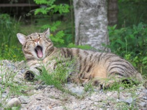

TÄNÄÄN MINULLA ON ILO KERTOA TEILLE PIENESTÄ TYTTÖKISSASTA, JOLLE ANNOIN NIMEKSI SU-MI
SAIN KOKEA KESÄLLÄ YHDEN ELÄMÄNI SUURIMMAN SURUN: Minulle niin tavattoman rakas Sakke-kissa joutui vanhuuden vaivojen vuoksi kissojen taivaaseen. Koko kesän olin allapäin ja tuntui, ettei mikään saa minua piristymään. Sakke nukutettiin ikiuneen 7. kesäkuuta 2024. Hautasin Saken Saarijärvelle lapsuuteni kodin pihaan, jonne olin vasta syksyllä haudannut Saana-tyttösen. Rakas Saana-neitokainen nimittäin pääsi kissojen taivaaseen 7. elokuuta 2023. Sakke ennätti täyttää peräti 17 vuotta. Saana ei aivan ennättänyt täyttämään 11 vuotta. Sakke jouduttiin lopettamaan ihan vanhuuden tuoman heikkouden vuoksi. Saanalla oli kipuja ja eläinlääkäri arvioi kyseessä olevan lymfooma. Oli armollista saattaa niin Sakke kuin Saanakin viimeisille matkoilleen. Lapsuuteni kodin pihamaalla ison vaahteran juurella on nyt molempien haudat. Kyllä aikuiselle miehelle tuli itku ja syvä suru.
Su-Mi on koti- eli maatiaiskissa. Su-Mi on tyttö, joka syntyi Saarijärven Kalmarissa 20.7.2024. Viidestä pennusta Su-Mi oli yksi vilkkaimmista. Su-Mi on musta, mutta rinnassa hänellä on tuntomerkkinä noin 10 valkoista karvaa! Toivon, että voisin antaa Su-Mille maailman parhaan kissakodin, vaikka olenkin eläkkeellä oleva psykologian opettaja.
Minä olen ollut kissahullu aina. Ei minulla mitään koiriakaan vastaan ole. Siskoni Novaskotiannoutaja Rauha ottaa minut vastaan niin liehakoiden, että aina täytyy toppuutella. Lapsena perheessämme oli kolme ajokoiraa, koska isäni ja veljeni metsästivät, mutta niin oli aina myös kissoja.
Heinäkuu 2007 muutti elämää todella paljon. Silloin haimme Ilmajoelta poikakissan, joka oli vasta aivan liian pieni luovutettavaksi, mutta viimeinen talosta, joka luovutettiin. Sakke oli repukka, jota kukaan ei ollut huolinut, mutta Sakesta kasvoi hyvässä hoidossa aivan todella komea uroskissa. Myöhemmin syksyllä 2012 elämääni tuli Saana. Aivan ihastuttavan rauhallinen ja rento tyttökissa. Viereisen palstan linkeistä pääset tutustumaan Saken ja Saanan maailmaan.
Nyt on vuosi 2024 lopuillaan ja minun elämässäni puhaltavat uudet tuulet. Saarijärven Kalmarin Lemmikkihotelli Karvakorvat tekee valtavan hyvää työtä niin kissojen kuin koirienkin eteen. Lemmikkihotelli toimii myös löytöeläinten pelastamisessa keskeisenä paikkana Keski-Suomessa ja etenkin Saarijärven ja Karstulan seudulla. Sain tietää, että Jasmina, löytökodin pitäjä etsii hyviä koteja tuoreille kissanpennuille, joiden emo oli loukutettu ja synnyttänyt pentuja kotiin. Sain sitten valita itselleni pienen mustan tyttökissan, jolle heti annoin nimeksi Su-Mi. Nimi tulee koreankielestä ja tarkoittaa kaunista, eleganttia, ihastuttavaa. Ehkäpä joku päivä ennätän kirjoittamaan enemmänkin Su-Mista näille sivuilleni.
